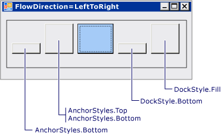
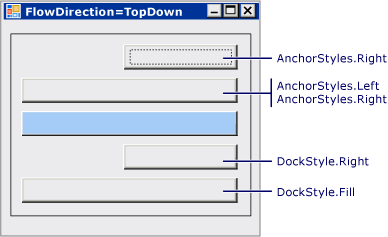

Практическое руководство. Привязка и закрепление дочерних элементов управления в элементе управления FlowLayoutPanel
Элемент управления FlowLayoutPanel поддерживает свойства Anchor и Dock в своих дочерних элементах управления.
Привязка и закрепление дочерних элементов управления в элементе управления FlowLayoutPanel
Создание элемента управления FlowLayoutPanel в форме.
Задайте Width из FlowLayoutPanel управления 300и задайте его FlowDirection для TopDown.
Создайте два элемента управления Button и поместите их в элемент управления FlowLayoutPanel.
Задайте Width первой кнопки значение 200.
Присвойте свойству Dock первой кнопки значение Fill.
Note
Вторая кнопка принимает ту же ширину, что и первая кнопка. Она не растягивается по ширине элемента управления FlowLayoutPanel.
Присвойте свойству Dock первой кнопки значение
None. При этом кнопка примет исходную ширину.Присвойте свойству Anchor первой кнопки значение
Left, Right.Important
Вторая кнопка принимает ту же ширину, что и первая кнопка. Она не растягивается по ширине элемента управления FlowLayoutPanel. Общее правило для привязки и закрепления в элементе управления FlowLayoutPanel: в вертикальном направлении элемент управления FlowLayoutPanel вычисляет ширину предполагаемого столбца исходя из ширины самого широкого элемента управления в столбце. Другие элементы управления в этом столбце со свойствами Anchor или Dock выравниваются или растягиваются до этого предполагаемого столбца. Аналогичное поведение работает и в горизонтальном направлении. Элемент управления FlowLayoutPanel вычисляет высоту предполагаемой строки на основе самого высокого дочернего элемента управления в строке, и все закрепленные или привязанные дочерние элементы управления в этой строке выравниваются или их размеры устанавливаются в соответствии с предполагаемой строкой.
Пример
На следующем рисунке показаны четыре кнопки, привязанный и закрепленные по отношению к синей кнопке в FlowLayoutPanel. Значение параметра FlowDirection — LeftToRight.

На следующем рисунке показаны четыре кнопки, привязанный и закрепленные по отношению к синей кнопке в FlowLayoutPanel. Значение параметра FlowDirection — TopDown.

В следующем примере кода демонстрируются все варианты свойства Anchor для размещения элемента управления Button в элементе управления FlowLayoutPanel.
using System;
using System.Collections.Generic;
using System.ComponentModel;
using System.Data;
using System.Drawing;
using System.Windows.Forms;
public class Form1 : Form
{
public Form1()
{
InitializeComponent();
}
private FlowLayoutPanel flowLayoutPanel3;
private Label label2;
private Button button11;
private Button button12;
private Button button13;
private Button button14;
private Button button15;
private FlowLayoutPanel flowLayoutPanel1;
private Label label1;
private Button button1;
private Button button2;
private Button button3;
private Button button4;
private Button button5;
private System.ComponentModel.IContainer components = null;
protected override void Dispose(bool disposing)
{
if (disposing && (components != null))
{
components.Dispose();
}
base.Dispose(disposing);
}
private void InitializeComponent()
{
this.flowLayoutPanel3 = new System.Windows.Forms.FlowLayoutPanel();
this.label2 = new System.Windows.Forms.Label();
this.button11 = new System.Windows.Forms.Button();
this.button12 = new System.Windows.Forms.Button();
this.button13 = new System.Windows.Forms.Button();
this.button14 = new System.Windows.Forms.Button();
this.button15 = new System.Windows.Forms.Button();
this.flowLayoutPanel1 = new System.Windows.Forms.FlowLayoutPanel();
this.label1 = new System.Windows.Forms.Label();
this.button1 = new System.Windows.Forms.Button();
this.button2 = new System.Windows.Forms.Button();
this.button3 = new System.Windows.Forms.Button();
this.button4 = new System.Windows.Forms.Button();
this.button5 = new System.Windows.Forms.Button();
this.flowLayoutPanel3.SuspendLayout();
this.flowLayoutPanel1.SuspendLayout();
this.SuspendLayout();
//
// flowLayoutPanel3
//
this.flowLayoutPanel3.Anchor = ((System.Windows.Forms.AnchorStyles)((((System.Windows.Forms.AnchorStyles.Top | System.Windows.Forms.AnchorStyles.Bottom)
| System.Windows.Forms.AnchorStyles.Left)
| System.Windows.Forms.AnchorStyles.Right)));
this.flowLayoutPanel3.BorderStyle = System.Windows.Forms.BorderStyle.FixedSingle;
this.flowLayoutPanel3.Controls.Add(this.label2);
this.flowLayoutPanel3.Controls.Add(this.button11);
this.flowLayoutPanel3.Controls.Add(this.button12);
this.flowLayoutPanel3.Controls.Add(this.button13);
this.flowLayoutPanel3.Controls.Add(this.button14);
this.flowLayoutPanel3.Controls.Add(this.button15);
this.flowLayoutPanel3.Location = new System.Drawing.Point(12, 12);
this.flowLayoutPanel3.Name = "flowLayoutPanel3";
this.flowLayoutPanel3.Size = new System.Drawing.Size(631, 100);
this.flowLayoutPanel3.TabIndex = 2;
//
// label2
//
this.label2.Anchor = System.Windows.Forms.AnchorStyles.None;
this.label2.AutoSize = true;
this.label2.Location = new System.Drawing.Point(3, 28);
this.label2.Name = "label2";
this.label2.Size = new System.Drawing.Size(138, 14);
this.label2.TabIndex = 10;
this.label2.Text = "FlowDirection=LeftToRight";
//
// button11
//
this.button11.Anchor = System.Windows.Forms.AnchorStyles.Bottom;
this.button11.AutoSize = true;
this.button11.Location = new System.Drawing.Point(147, 44);
this.button11.Name = "button11";
this.button11.Size = new System.Drawing.Size(86, 23);
this.button11.TabIndex = 5;
this.button11.Text = "Anchor=Bottom";
//
// button12
//
this.button12.Anchor = ((System.Windows.Forms.AnchorStyles)((System.Windows.Forms.AnchorStyles.Top | System.Windows.Forms.AnchorStyles.Bottom)));
this.button12.AutoSize = true;
this.button12.Location = new System.Drawing.Point(239, 3);
this.button12.Name = "button12";
this.button12.Size = new System.Drawing.Size(111, 64);
this.button12.TabIndex = 6;
this.button12.Text = "Anchor=Top, Bottom";
//
// button13
//
this.button13.Anchor = System.Windows.Forms.AnchorStyles.None;
this.button13.BackColor = System.Drawing.SystemColors.GradientActiveCaption;
this.button13.Location = new System.Drawing.Point(356, 3);
this.button13.Name = "button13";
this.button13.Size = new System.Drawing.Size(75, 64);
this.button13.TabIndex = 7;
//
// button14
//
this.button14.Dock = System.Windows.Forms.DockStyle.Bottom;
this.button14.Location = new System.Drawing.Point(437, 44);
this.button14.Name = "button14";
this.button14.TabIndex = 8;
this.button14.Text = "Dock=Bottom";
//
// button15
//
this.button15.Dock = System.Windows.Forms.DockStyle.Fill;
this.button15.Location = new System.Drawing.Point(518, 3);
this.button15.Name = "button15";
this.button15.Size = new System.Drawing.Size(75, 64);
this.button15.TabIndex = 9;
this.button15.Text = "Dock=Fill";
//
// flowLayoutPanel1
//
this.flowLayoutPanel1.Anchor = ((System.Windows.Forms.AnchorStyles)(((System.Windows.Forms.AnchorStyles.Bottom | System.Windows.Forms.AnchorStyles.Left)
| System.Windows.Forms.AnchorStyles.Right)));
this.flowLayoutPanel1.BorderStyle = System.Windows.Forms.BorderStyle.FixedSingle;
this.flowLayoutPanel1.Controls.Add(this.label1);
this.flowLayoutPanel1.Controls.Add(this.button1);
this.flowLayoutPanel1.Controls.Add(this.button2);
this.flowLayoutPanel1.Controls.Add(this.button3);
this.flowLayoutPanel1.Controls.Add(this.button4);
this.flowLayoutPanel1.Controls.Add(this.button5);
this.flowLayoutPanel1.FlowDirection = System.Windows.Forms.FlowDirection.TopDown;
this.flowLayoutPanel1.Location = new System.Drawing.Point(12, 118);
this.flowLayoutPanel1.Name = "flowLayoutPanel1";
this.flowLayoutPanel1.Size = new System.Drawing.Size(200, 209);
this.flowLayoutPanel1.TabIndex = 3;
//
// label1
//
this.label1.AutoSize = true;
this.label1.Location = new System.Drawing.Point(3, 3);
this.label1.Name = "label1";
this.label1.Size = new System.Drawing.Size(128, 14);
this.label1.TabIndex = 11;
this.label1.Text = "FlowDirection=TopDown";
//
// button1
//
this.button1.Anchor = System.Windows.Forms.AnchorStyles.Right;
this.button1.Location = new System.Drawing.Point(74, 23);
this.button1.Name = "button1";
this.button1.TabIndex = 5;
this.button1.Text = "Anchor=Right";
//
// button2
//
this.button2.Anchor = ((System.Windows.Forms.AnchorStyles)((System.Windows.Forms.AnchorStyles.Left | System.Windows.Forms.AnchorStyles.Right)));
this.button2.Location = new System.Drawing.Point(3, 52);
this.button2.Name = "button2";
this.button2.Size = new System.Drawing.Size(146, 23);
this.button2.TabIndex = 6;
this.button2.Text = "Anchor=Left, Right";
//
// button3
//
this.button3.BackColor = System.Drawing.SystemColors.GradientActiveCaption;
this.button3.Location = new System.Drawing.Point(3, 81);
this.button3.Name = "button3";
this.button3.Size = new System.Drawing.Size(146, 23);
this.button3.TabIndex = 7;
//
// button4
//
this.button4.Dock = System.Windows.Forms.DockStyle.Right;
this.button4.Location = new System.Drawing.Point(74, 110);
this.button4.Name = "button4";
this.button4.TabIndex = 8;
this.button4.Text = "Dock=Right";
//
// button5
//
this.button5.Dock = System.Windows.Forms.DockStyle.Fill;
this.button5.Location = new System.Drawing.Point(3, 139);
this.button5.Name = "button5";
this.button5.Size = new System.Drawing.Size(146, 23);
this.button5.TabIndex = 9;
this.button5.Text = "Dock=Fill";
//
// Form1
//
this.ClientSize = new System.Drawing.Size(658, 341);
this.Controls.Add(this.flowLayoutPanel1);
this.Controls.Add(this.flowLayoutPanel3);
this.Name = "Form1";
this.Text = "Form1";
this.flowLayoutPanel3.ResumeLayout(false);
this.flowLayoutPanel3.PerformLayout();
this.flowLayoutPanel1.ResumeLayout(false);
this.flowLayoutPanel1.PerformLayout();
this.ResumeLayout(false);
}
[STAThread]
static void Main()
{
Application.EnableVisualStyles();
Application.Run(new Form1());
}
}
Warning
It looks like the sample you are looking for does not exist.
Компиляция кода
Для этого примера требуются:
- ссылки на сборки System, System.Data, System.Drawing и System.Windows.Forms.
Сведения о выполнении сборки этого примера из командной строки для Visual Basic или Visual C#, см. в разделе построение из командной строки или командной строки создания с помощью csc.exe. Можно также сборке этого примера в Visual Studio путем вставки кода в новый проект.